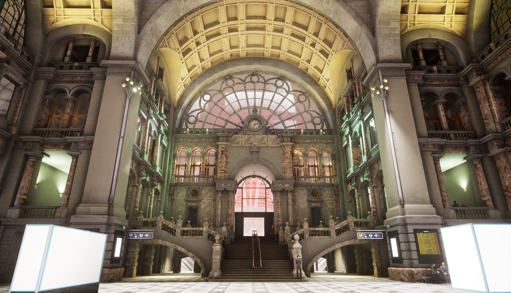

ClearChannel: 3D Journey
ClearChannel is a company that makes advertisement boards you see everywhere. Since they would be the
providers of the boards in Antwerp Central Station, they asked us to make a tool for them which they could
use to give the advertisers a preview of how their ad will look in the environment.
For this project we worked in a team of 3 artists and 2 programmers. The artists being David Meszaros, Ilja
Wijnker and Filip Hajek. The programmers were Kristof Dedeurwaerder and me.

The tool we made has a lot of functionality to make it easy for ClearChannel to place down
advertisements in their boards and later showcase them to their clients.
Features of the tool include:
-An image manager menu.
-A Save and Load
system.
-A menu with buttons that will teleport you to the corresponding board.
-Path guided
movement
for the player menu with buttons that will put you on the corresponding path
-Buttons to toggle free
camera on those paths and being locked to the path or having free movement.
-The option to change to
a
Day or Night version of the level.
-Extra options like showing the distances between the player and
each
advertisement board, as well as saving a screenshot.
-A toggle-able crowd simulator
The image manager was one of the main things I made and the thing I spend the most time on.
In this menu the user can choose to upload an image of their choice, which will then show up in the menu with the thumbnail and name.
The user can choose to change the image's name in here or remove the image from the menu.
However, the main functionality is being able to drag an image from it, towards an advertisement board inside of the level. The image will then appear on there.


Another useful thing in this tool is the ability to save and load presets.
When you have filled in all advertisement boards in the level that you wish to display to your client,
you can press the save button and choose a name for your preset. It will then appear in the menu to be loaded up afterwards when you want to show it.
This will save all the advertisements you've placed on the boards.
The switching from day and night works the same way, since the day and night lighting are done in different but identical maps.
When you press the button to switch to night for example, it will save your current ads you've placed and then load them again when loading up the different map.